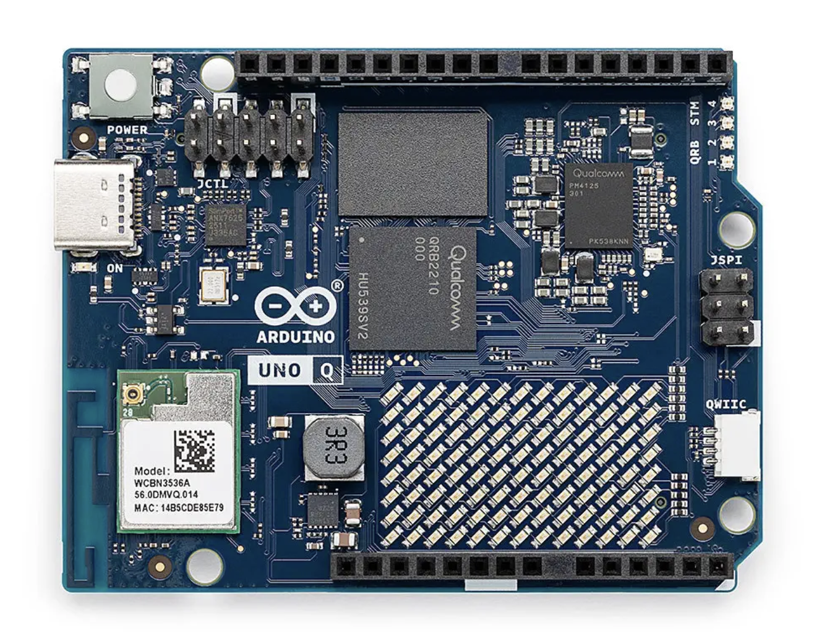
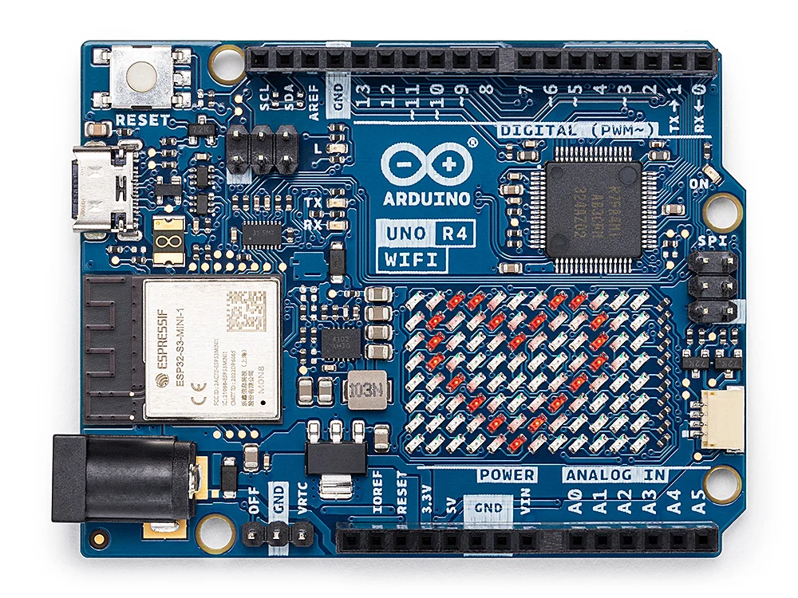

Getting Started
Requirements, the Quick start build, and the Blink walkthrough from javac to a flashed board.
Juno is an ahead-of-time compiler for running a practical subset of Java on the Arduino UNO R4 WiFi
and the Arduino UNO Q. It keeps javac as the Java frontend, performs
closed-world linking on the development machine, and emits GNU ARM (Cortex-M4, Thumb-2) assembly
straight from Juno's own IR, plus a small extern "C" C++ runtime shim (GPIO/Serial/LED matrix/
Wi-Fi/HTTP/JSON helpers, the arena allocator, long/float/double support) that the board's
Arduino toolchain assembles and links alongside it into native code: the Renesas core for the
UNO R4 WiFi's RA4M1 (Cortex-M4), and the Zephyr core for the UNO Q's STM32U585 microcontroller
(Cortex-M33, which runs the same Thumb-2 code).
Arduino UNO Q

Arduino UNO R4 WiFi

This repository contains a working v0.1 compiler, not a JVM interpreter. The first milestone
supports 32-bit integer code, static methods, branches, loops, and GPIO/time intrinsics. It can
compile juno-examples/src/main/java/io/github/jabrena/juno/api/Blink.java all the way to a
sketch (.S assembly + Shim.cpp runtime + .ino wrapper).
Java source -> javac -> .class -> Juno linker/AOT -> .S + Shim.cpp + .ino -> Arduino toolchain -> RA4M1 (UNO R4 WiFi)
-> STM32U585 (UNO Q)
Modules
This is a multi-module Maven build:
juno/— the Juno compiler itself (classfile,bytecode,linker,backend, …), plus the small Java-facing hardware API Juno recognizes as compiler intrinsics (io.github.jabrena.juno.api:Delay,Clock,Random,LedMatrix,api.io.Gpio,api.io.DigitalOutput,api.lcd.LcdKeypadShield,api.tft.TftTouchShield,api.io.hid.Mouse,api.io.usb.Serial, …) and theio.github.jabrena.juno.annotationspackage (Board,ArduinoBoard,ArduinoUnoR4WiFi,ArduinoUnoQ) that entry-point classes use to select a compilation target. Buildsjuno/target/juno-<version>.jar, an executable jar whose main class isio.github.jabrena.juno.Main.juno-maven-plugin/— Maven goals for generating a sketch (juno:compile), compiling it with Arduino CLI (juno:verify), uploading it (juno:upload), and opening the serial monitor (juno:monitor). Every sketch is generated by the Cortex-M4 ASM backend, Juno's sole code-generation backend.juno-examples/— example Java programs written againstjuno'sapiandannotationspackages, compiled by Maven like any other Java module (juno-examples/target/classes) so they are checked for compile errors on every build.
Quick start
Requirements: JDK 25+ and Maven 3.9+.
./mvnw clean install
This builds all three modules: juno/target/juno-0.1.0-SNAPSHOT.jar (the compiler and hardware
API), juno-maven-plugin/target/juno-maven-plugin-0.1.0-SNAPSHOT.jar (the Maven integration), and
juno-examples/target/classes (the compiled example programs). To turn an example into a
.ino sketch and run it on real UNO R4 WiFi or UNO Q hardware with arduino-cli, see
docs/ARDUINO.md. The UNO Q also needs Arduino's Zephyr core:
arduino-cli core install arduino:zephyr.
Use the following commands for the complete Blink workflow:
# Generate and verify with arduino-cli
./mvnw -f juno-examples/pom.xml compile juno:verify \
-Djuno.main=io.github.jabrena.juno.api.Blink
# Upload
./mvnw -f juno-examples/pom.xml compile juno:upload \
-Djuno.main=io.github.jabrena.juno.api.Blink
# Monitor
./mvnw -f juno-examples/pom.xml juno:monitor
Upload and monitor auto-detect the port when exactly one matching board is connected. Otherwise,
select it with -Djuno.port=<PORT>. Select another example with
-Djuno.main=<fully-qualified-class-name>.
Java API
Hardware operations are normal Java native declarations at compile time and compiler intrinsics at link time:
import io.github.jabrena.juno.annotations.ArduinoUnoR4WiFi;
import io.github.jabrena.juno.annotations.Board;
import io.github.jabrena.juno.api.Delay;
import io.github.jabrena.juno.api.io.DigitalOutput;
@Board(ArduinoUnoR4WiFi.class)
public final class Blink {
public static void main(String[] args) {
DigitalOutput led = DigitalOutput.of(13);
while (true) {
led.high();
Delay.millis(500);
led.low();
Delay.millis(500);
}
}
}
See the Javadoc for the complete Java API reference.
For Wi-Fi connections, HTTP/HTTPS REST calls, and bounded JSON response extraction, see the
Internet access guide. Credentials can be resolved at compile time or loaded
from an SD card as described in the SD-card configuration guide. For sending and reading email
(Smtp/Pop3Client), see docs/EMAIL.md. For how these API classes work
internally, and the checklist for adding a new one, see docs/APIS.md.
Target board
@Board (io.github.jabrena.juno.annotations.Board) on the entry-point class selects the board
Juno compiles for, and juno:verify/juno:upload build for its Arduino CLI FQBN:
| Annotation | Board | FQBN |
|---|---|---|
@Board(ArduinoUnoR4WiFi.class) |
Arduino UNO R4 WiFi | arduino:renesas_uno:unor4wifi |
@Board(ArduinoUnoQ.class) |
Arduino UNO Q (its STM32U585 microcontroller) | arduino:zephyr:unoq |
A class with no @Board annotation targets the UNO R4 WiFi. GPIO, time, Serial and the shields
built on them (LCD keypad, TFT touch) compile and upload for both boards. The LED matrix, Wi-Fi with HTTP/HTTPS, and
@Watchdog are UNO R4 WiFi only (on the UNO Q, its LED matrix and Wi-Fi belong to the board's
Linux side), and Juno rejects them at compile time for the UNO Q. The other APIs built on UNO R4
libraries (email, USB mouse, SD card, servo) have not been tried on the UNO Q yet. The TFT games
Star Trek,
Star Wars,
The Empire Strikes Back,
Red Baron and
Space Paranoids
target the UNO Q:
@Board(ArduinoUnoQ.class)
public final class RedBaron {
Supported Java subset
Juno deliberately fails at link time when reachable code uses something outside the current subset. Diagnostics identify the method, bytecode offset, and unsupported opcode. See docs/FEATURES.md for the full, up-to-date inventory of what's supported and what isn't.
Before generating or uploading a sketch, inspect conservative runtime-risk and resource estimates:
java -jar juno/target/juno-0.1.0-SNAPSHOT.jar inspect \
--main ArenaFeaturesPulse \
--classpath juno-examples/target/classes:juno/target/classes \
--risks
The report includes the fixed-arena budget, estimated static RAM and generated local storage,
maximum call depth, emitted array bounds checks, and stable JUNO-RISK-* findings for allocation
inside loops, recursion, possible integer division by zero, unchecked array access, and
compile-time-null dereferences. These are conservative source-level checks; the Arduino linker's
memory report remains authoritative for final RAM and flash use.
Architecture
classfileparses standard JVM class files and resolves constant-pool references.bytecodedecodes and validates the v0.1 instruction set.linkerstarts atmain, follows reachable static calls, resolves hardware intrinsics, and eliminates unreachable methods.backendemits GNU ARM (Cortex-M4, Thumb-2) assembly directly from Juno's IR, plus a smallextern "C"C++ runtime shim (GPIO/Serial/LED matrix/Wi-Fi/HTTP/JSON helpers, the arena allocator,long/float/doublesupport) that the generated assembly calls into.
The above, along with the small Java-facing hardware abstraction (api/) and the @Board
selection types (annotations/), live under
juno/src/main/java/io/github/jabrena/juno/.
Development
./mvnw test
Runs the full reactor's tests, including the juno module's compiler unit tests and offline
toolchain verification for the generated ASM backend artifacts. The tests compile Java fixtures,
check reachability and failure diagnostics, assemble generated .S files with a bundled
arm-none-eabi-gcc when one can be found locally, and pass the generated runtime shim through
clang++ or g++ with a minimal Arduino compatibility header when one is available.
./mvnw javadoc:aggregate
Generates a Javadoc site for juno into docs/javadocs/<version>/apidocs,
e.g. docs/javadocs/0.1.0-SNAPSHOT/apidocs/index.html (juno-examples is excluded, since it's
example programs rather than library API).
Cyclomatic complexity
The cyclomatic-complexity profile runs PMD's
CyclomaticComplexity
rule on every module with the thresholds in
pmd/pmd-cyclomatic-complexity.xml (methods above 25,
classes above 70):
# Check: fails the build on any method or class over the thresholds
./mvnw clean verify -Pcyclomatic-complexity
# Report: the aggregate PMD report for all modules, cross-linked to the source
./mvnw -Pcyclomatic-complexity -DskipTests site
The report is written to target/site/pmd.html (and per module to <module>/target/site/pmd.html).
Serve it with the JDK's built-in web server, jwebserver (JDK 18+; it needs an absolute path),
then open http://127.0.0.1:8000/pmd.html:
jwebserver -d "$(pwd)/target/site" -p 8000
Stop the server with Ctrl+C.
References
- https://dev.java/
- https://store.arduino.cc/products/uno-r4-wifi
- https://store.arduino.cc/products/arduino-uno-rev3
- https://store.arduino.cc/products/arduino-uno-wifi-rev2
- https://lejos.sourceforge.io/
- https://lejos.sourceforge.io/nxt/nxj/api/index.html
- https://tinyvm.sourceforge.net/
- https://haiku-vm.sourceforge.net/
- https://sunspotdev.org/
- https://sunspotdev.org/docs/index.html
- https://github.com/dzindra/lcdkeypad
- https://github.com/arduino-libraries/Mouse
- https://github.com/mobizt/ESP_SSLClient